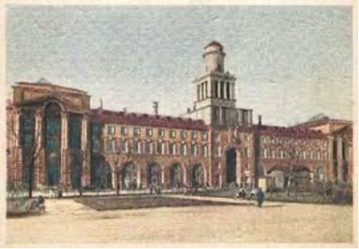

Иван Ильинский
Главный корпус университета ИТМО находится в здании на Кронверкском проспекте, 49 (в советское время — пр. Максима Горького, 49). Это здание было построено в 1910-1914 гг. с использованием элементов архитектуры классицизма. Архитекторами здания были М.М. Перетяткович и М.С. Лялевич. Декорации и внешний вид здания впечатлят любого: первый этаж, украшенный рустами и служащий цоколем для двух верхних, прорезан по фасаду благородными и большими арками застеклённых проёмов, а центральный ризалит - еще более высокой аркой проезда. На уровне двух верхних этажей боковые ризалиты украшены колоннами, несущими треугольные фронтоны, увенчанные скульптурой; посередине сооружения возвышается 4-гранная мощная башня, украшенная куполом.

Здание, в котором ныне располагается главный корпус университета, было построено на средства городской думы для размещения в нём различных городских учреждений. Отсюда появилось и название здания — 2-й дом городских учреждений. До того, как здание стало главным корпусом университета ИТМО, в нем располагались Петербургский комитет РСДРП, Биржа труда, Высшая профессорская школа и сектор по регулированию организованного набора рабочей силы Леноблисполкома. После Великой Отечественной Войны в здании разместился один из корпусов Ленинградского института точной механики и оптики, а в настоящее время в здании находится главный корпус Национального исследовательского университета ИТМО. Здание включено в Единый государственный реестр объектов культурного наследия (памятников истории и культуры) народов Российской Федерации.
270